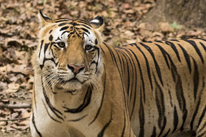
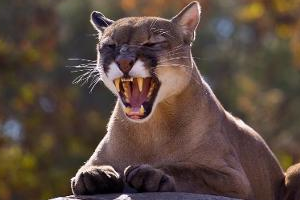
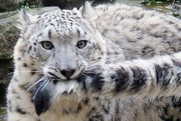

The tiger (Panthera tigris) is the largest cat species,
most recognizable for its pattern of dark vertical stripes
on reddish-orange fur with a lighter underside. The species
is classified in the genus Panthera with the lion, leopard,
jaguar, and snow leopard.

Puma is a genus in the family Felidae that contains the cougar
(also known as the puma, among other names), and may also include
several poorly known Old World fossil representatives (for example,
Puma pardoides, or Owen's panther, a large, cougar-like cat of
Eurasia's Pliocene).

The snow leopard or ounce (Panthera uncia) is a large cat native to the
mountain ranges of Central and South Asia. It is listed as Vulnerable on
the IUCN Red List of Threatened Species because the global population is
estimated to number less than 10,000 mature individuals and decline about
10% in the next 23 years.
